Видео из текста
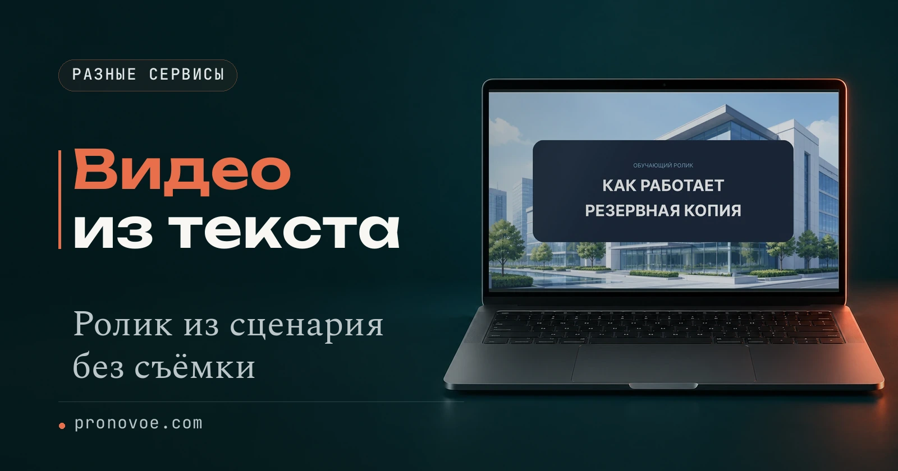
Видео из текста: как получить MP4 и сравнить 9 сервисов
Начальный уровень
Красивый предпросмотр ещё ничего не доказывает. Ограничение может появиться только после экспорта: знак поверх кадра, запрет коммерческого использования или отсутствие самой кнопки MP4. Сначала проверим файл на коротком фрагменте, затем сравним девять вариантов по тому, что они действительно отдают читателю
Тарифы и лимиты могут меняться
Сначала проверка
Как не потратить весь сценарий на непригодный файл
Возьми один фрагмент до 15 секунд с именем, числом и сменой сцены. Для ZSKY AI сократи тест до 5 секунд. Такой фрагмент сразу показывает три риска: ошибку озвучки, случайный кадр и ограничение, которое видно только в скачанном файле
- Выбери сервис по типу результата: полный ролик, отдельная сцена, ведущий или раскадровка
- Вставь только тестовый фрагмент и попроси собрать видео
- Открой сцены и замени кадры, которые расходятся со смыслом
- Проверь голос, субтитры и первые три секунды без звука
- Нажми экспорт и скачай MP4
Проверка закончена, когда MP4 лежит в загрузках, открывается в плеере и запускает звук без пустой паузы. Если файл не скачивается или водяной знак мешает публикации, переходи к следующему маршруту
До выбора тарифа
Что именно будет на выходе
Сервис делит текст на сцены, подставляет стоковые или сгенерированные кадры, добавляет озвучку и субтитры. Поэтому ролик появляется быстро, но мастерская из твоего текста может стать чужой мастерской, а важная фраза попасть на случайный кадр
Сначала собери до 15 секунд, а для ZSKY AI - 5 секунд. Если сцены подходят, голос правильно читает имена и числа, а файл скачивается в нужном качестве, только тогда отдавай сервису весь сценарий
От полного ролика к отдельной сцене
Что дают девять сервисов до оплаты
Одни отдают MP4 со знаком, другие показывают только черновик, третьи ограничивают длину сцены. Начнём с полного ролика и дойдём до вариантов для отдельного кинокадра, своей озвучки и российского входа
1. invideo AI
Бери его, если нужно отдать сервису сценарий целиком и получить ролик со сценами, голосом и субтитрами
Открыть: invideo.io
Бесплатно: Аккаунт создаётся без карты. Бесплатная квота обновляется по понедельникам в 00:00 UTC
Как дойти до файла: Вставь сценарий, запусти сборку, поправь сцены в черновике и нажми экспорт
Подвох: Бесплатные экспорты выходят с водяным знаком. Файл, скачанный до оплаты, нужно экспортировать заново после перехода на платный план
Источники на 18.10.2026: бесплатный режим, тарифы и повторный экспорт без знака
2. ZSKY AI
Если нужно быстро набрать несколько коротких сцен, здесь можно проверять запросы без счётчика генераций
Открыть: https://zsky.ai/
Бесплатно: Безлимитные генерации без карты. Бесплатное видео длится до 5 секунд, выходит в HD с синхронизированным звуком и скачивается из галереи
Для чего брать: Короткие сцены и быстрые пробы без счётчика
Как дойти до файла: Войди, выбери Text to Video, вставь запрос, запусти генерацию и открой готовую работу в галерее. Нажми Download, затем открой MP4 из загрузок
Звук: Можно загрузить свою аудиодорожку, чтобы видео подстраивалось под неё, или описать нужные звуки в запросе и сгенерировать их вместе с видео
Подвох: На бесплатном выходе есть небольшая плашка «MADE WITH / zsky.ai». Платные планы её снимают
Хранение: Бесплатные работы хранятся в галерее 7 дней, поэтому удачный файл скачай сразу
Водяной знак: Небольшая плашка на бесплатном выходе. Карта: Нет
Источник условий на 18.10.2026: официальное описание бесплатного тарифа
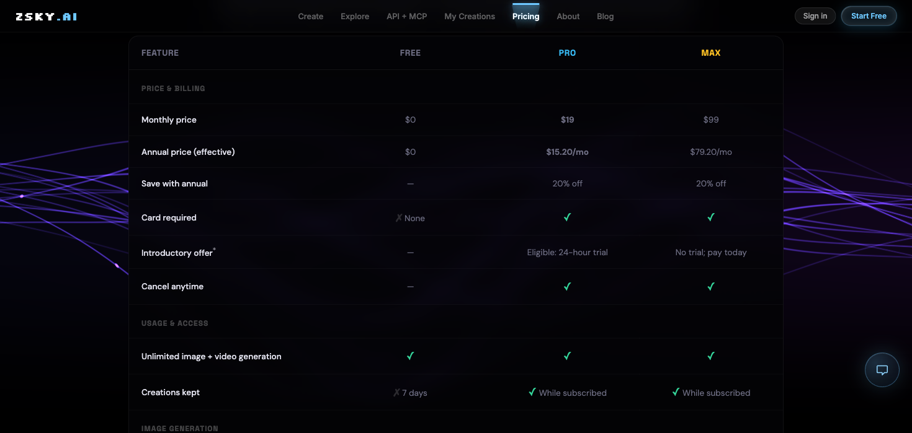
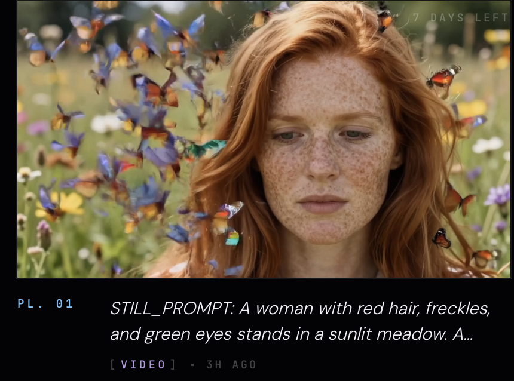
Промпт для ZSKY AI
Короткий запрос для сцены с девушкой и бабочками. ZSKY принимает запросы на русском и английском
Рыжеволосая девушка с веснушками и зелёными глазами стоит на солнечном лугу. Вокруг неё разноцветные бабочки, которые взлетают вверх. Девушка неподвижна, камера статична. Мягкий дневной свет и весенний звуковой фон
3. Kling
Если нужен один выразительный кинокадр, Kling позволяет проверить движение камеры и свет до сборки всего ролика
Открыть: https://kling.ai/
Бесплатно: Есть бесплатный доступ к генерации видео. Количество доступных кредитов посмотри в своём аккаунте. Ежедневные бонусы для подписчиков действуют во время акций
Для чего брать: Когда нужен отдельный выразительный кинокадр
Как дойти до файла: Войди, открой AI Videos, выбери Text to Video, вставь запрос и формат 9:16. После генерации открой ролик и нажми Download
Подвох: На бесплатном видео водяной знак. Перед генерацией посмотри остаток кредитов в своём аккаунте
Водяной знак: Да. Карта: Не указано. VPN: страница открывается без VPN
Источники условий: бесплатная генерация и водяной знак, правила кредитов, условия на 25.09.2026
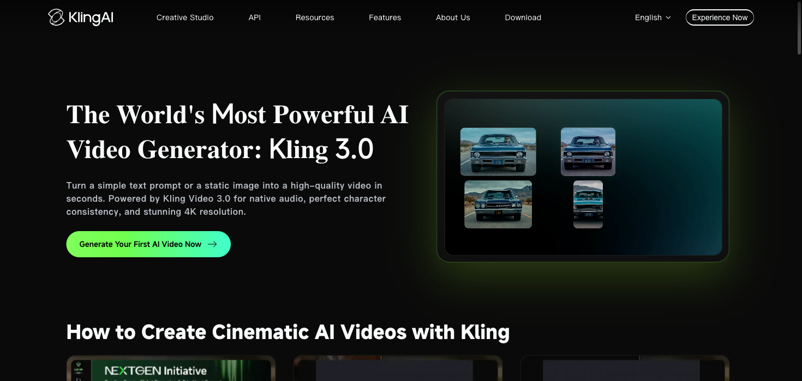
Промпт для Kling
Вертикальный кинематографичный кадр 9:16. Ночной трамвай медленно едет по мокрой улице, отражения фонарей скользят по рельсам. Камера плавно следует сбоку, один непрерывный план, реалистичный свет, без текста
4. Fliki
Если уже есть своя озвучка, Fliki раскладывает её по сценам и отдаёт единый файл с субтитрами или без них
Открыть: https://fliki.ai/
Бесплатно: 3 кредита в месяц, экспорт одного ролика до 5 минут в 720p, без карты
Для чего брать: Оформить свою озвучку изображениями. Можно выбрать стиль картинок: реалистичный или рисованный, как в примере ниже
Как дойти до файла: Создай проект Audio to Video, загрузи MP3 или WAV, проверь сцены и субтитры, затем нажми Download. На Free получишь MP4 до 5 минут в 720p
Подвох: На Free раскадровка остаётся статичной, экспорт получает знак Fliki, а коммерческие права не входят в тариф. Движущиеся AI-фрагменты требуют платного плана и дополнительных кредитов
Источники условий на 18.10.2026: тарифы и справка Fliki
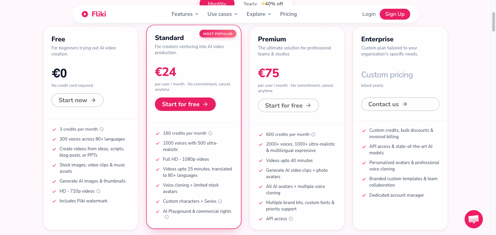
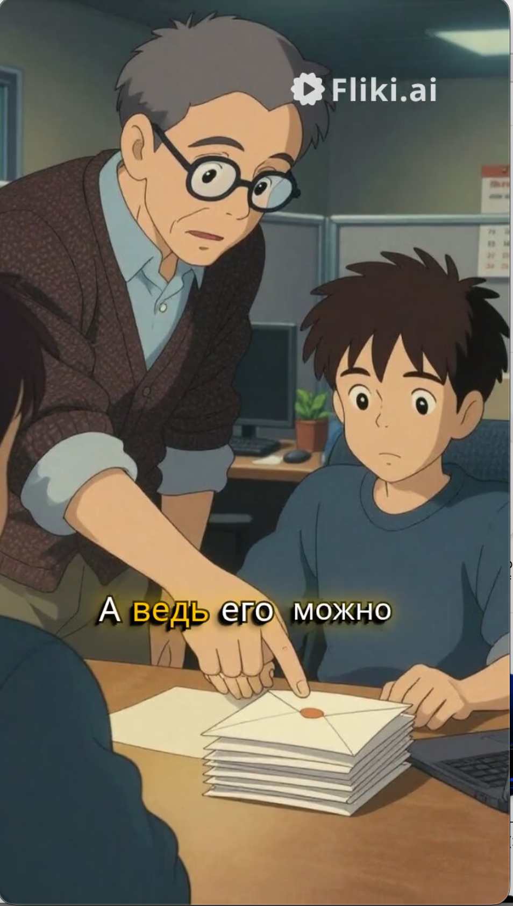
Что видно на результате
В примере картинки сменяются под собственную озвучку, а белый логотип Fliki.ai остаётся в правом верхнем углу
5. Pictory
Бери Pictory, если сценарий длинный и его нужно спокойно разложить по сценам, а затем заменить неподходящие стоковые кадры
Открыть: pictory.ai
Пробный доступ: На странице тарифов есть бесплатная проба. В ней можно проверить сборку, но скачанный ролик будет с брендингом Pictory
Как дойти до файла: Вставь текст, проверь деление на сцены, замени слабые кадры, сгенерируй озвучку и скачай результат
Подвох: Надпись «No watermark» относится к платным планам. После оплаты старый пробный файл нужно скачать заново
Источники на 18.10.2026: тарифы и правила брендинга
6. D-ID
Бери D-ID, когда зрителю нужен ведущий, который произнесёт твой текст, а обычная нарезка стоковых сцен задачу не решает
Открыть: d-id.com
Пробный доступ: Длится 14 дней и даёт до 3 минут видео
Как дойти до файла: Выбери ведущего, вставь сценарий, подбери голос, собери короткий тест и скачай видео
Подвох: На пробном видео появляется полноэкранный водяной знак. Длительность списывается с округлением вверх до ближайших 15 секунд
Источник условий на 18.10.2026: официальные тарифы и ответы D-ID
7. Steve AI
Если нужна обучающая раскадровка, Steve AI покажет сцены и подписи до оплаты, но бесплатный план не отдаёт видеофайл
Открыть: https://www.steve.ai/
Бесплатно: Тариф Free даёт 5 кредитов на генерацию видео и 10 кредитов на изображения в месяц
Для чего брать: Обучающая раскадровка: иллюстрации и подписи по сценам твоего сценария
Подвох: В актуальной таблице тарифов у Free стоит прочерк в строке Downloadable Format. Бесплатно можно проверить черновик, но для MP4 нужен как минимум план Basic
Источники на 18.10.2026: таблица тарифов и страница Photo Video Maker
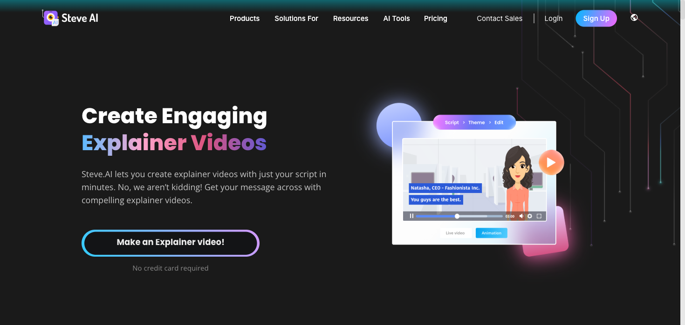
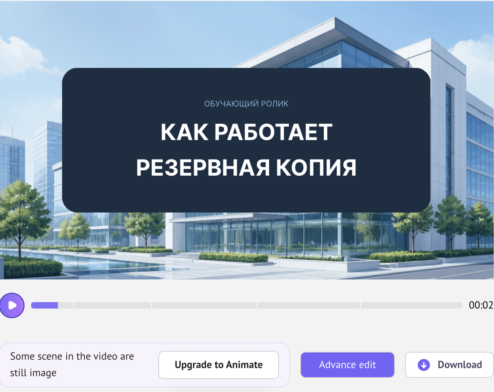
Что проверяется бесплатно
По сценарию получается раскадровка с иллюстрациями и подписями. Часть сцен остаётся неподвижной
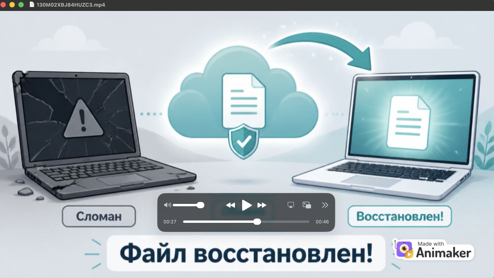
Архивный пример
Этот MP4 был сохранён 25.09.2026 через Animaker и не доказывает возможность экспорта из текущего бесплатного Steve AI
Запрос для обучающих сцен
Сделай короткую обучающую раскадровку на русском: «Как работает резервная копия». Сцена 1: файл на ноутбуке. Сцена 2: копия уходит в облако. Сцена 3: ноутбук ломается, файл восстанавливается из облака. Добавь короткие подписи
Два российских варианта
Если зарубежный вход или оплата мешают проверить идею, Шедеврум работает через Яндекс ID, а Kandinsky в GigaChat через Сбер ID
8. Шедеврум
Если нужен русскоязычный черновик без зарубежного входа, Шедеврум создаёт короткую сцену по тексту в приложении
Открыть: веб-версию Шедеврума или приложение для iPhone и iPad. Ссылка на сайт может открыть ленту чужих работ
Бесплатно: Генерация доступна после входа через Яндекс ID. Числовой лимит в официальной справке не указан
Для чего брать: Быстро проверить визуальную идею на русском языке
Подвох: Официальные условия разрешают личное некоммерческое использование. Для коммерческого использования требуется разрешение Яндекса
Как начать в приложении: Войди через Яндекс ID, в нижнем меню выбери «Видео», вставь запрос из блока ниже и нажми «Создать». Выбери первый кадр и нажми «Создать видео». Пошаговая справка Яндекса
Водяной знак: Не указано. Карта: Вход через Яндекс ID; требование карты не указано. VPN: страница открывается без VPN
Источники на 18.10.2026: справка Шедеврума и условия использования
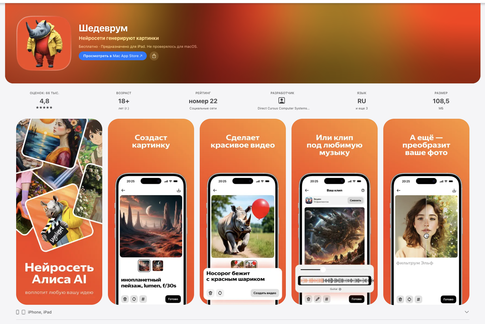
Промпт для Шедеврум
Создай короткое вертикальное видео: бумажный кораблик плывёт по луже после дождя, вокруг отражаются вечерние огни. Камера медленно приближается к кораблику, мягкое движение воды, без людей и надписей
9. Kandinsky в GigaChat
Если зарубежный сервис не открывается, Kandinsky в GigaChat позволяет собрать и скачать короткую русскоязычную сцену после входа через Сбер ID
Открыть: https://giga.chat/
Бесплатно: Ролики доступны бесплатно после входа через Сбер ID. Число запросов ограничено
Для чего брать: Сделать русскоязычную сцену без оплаты подписки
Подвох: Нужен Сбер ID. Если запросы закончились, придётся подождать или пригласить друзей
Как начать: Войди через Сбер ID, открой «Полезное» → «Создать видео», выбери генерацию по тексту и формат 9:16. Вставь запрос из блока ниже и запусти генерацию. Готовое видео можно скачать кнопкой в левом верхнем углу
Водяной знак: Не указано. Карта: нет, нужен Сбер ID. VPN: страница открывается без VPN
Источник условий на 18.10.2026: официальная страница сервиса
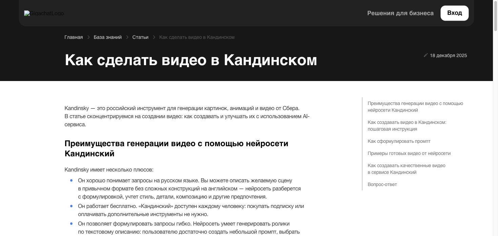
Промпт для Kandinsky в GigaChat
Создай вертикальное видео 9:16: одинокий красный зонтик лежит на пустой городской скамейке после дождя. Камера плавно отъезжает, на мокрой дорожке отражаются фонари. Реалистичная съёмка, спокойное движение, без текста и людей
Сравнение
Смотри на скачиваемый файл, знак и право использования. Бесплатная генерация сама по себе ещё не означает готовый ролик для публикации
| Сервис | Что проверишь бесплатно | Главное ограничение |
|---|---|---|
| invideo AI | Сборку полного ролика без карты | Знак на бесплатном экспорте |
| ZSKY AI | Сцены до 5 секунд, HD и звук | Плашка на бесплатном выходе |
| Kling | Отдельную кинематографичную сцену | Кредиты и водяной знак |
| Fliki | 3 кредита, 720p, экспорт до 5 минут | Знак и отсутствие коммерческих прав на Free |
| Pictory | Разделение длинного текста на сцены | Брендинг пробного доступа |
| D-ID | Говорящего ведущего, до 3 минут | Полноэкранный знак на пробе |
| Steve AI | Черновик раскадровки, 5 видеокредитов | На Free нет скачиваемого формата |
| Шедеврум | Русскоязычную сцену | Отдельное согласование коммерческого использования |
| Kandinsky в GigaChat | Русскоязычную сцену без оплаты | Ограниченное число запросов |
Сколько стоит снять главное ограничение
| Сервис | Младший платный вариант | Что меняется |
|---|---|---|
| invideo AI | Starter: обычная ставка 20 $ в месяц при годовой оплате, для новых клиентов на 18.10.2026 показана акция 10 $ в месяц | 400 кредитов в месяц и платный экспорт |
| ZSKY AI | Pro: 19 $ в месяц | 1080p, быстрый рендер и файл без плашки |
| Pictory | Starter: 29 $ помесячно или 25 $ в месяц при годовой оплате | Скачивание без водяного знака |
| Steve AI | Basic: 10 $ в месяц при годовой оплате | MP4 в 720p и экспорт без знака Steve AI |
Цены сверены по официальным страницам 18.10.2026, указаны без налогов и могут зависеть от периода оплаты. Перед покупкой проверь итог на экране оформления
Самый полезный вывод сравнения: бесплатная генерация ещё не означает бесплатный файл. Если задача одноразовая, ищи маршрут с допустимым знаком. Если ролики выходят регулярно, сравнивай цену уже после короткого экспорта, когда известно, что голос, сцены и формат подходят
Диагностика до переделки
Что ломается и что делать
Генерация не запускается
Сначала проверь остаток квоты или кредитов. Если лимит исчерпан, уменьши тест до одной сцены либо дождись обновления бесплатной квоты. У invideo AI она обновляется по понедельникам в 00:00 UTC
Ролик короче сценария
Проверь потолок конкретного режима. ZSKY делает короткие сцены, D-ID списывает длительность отрезками по 15 секунд, а Fliki ограничивает и месячные кредиты, и длину одного экспорта
На скачанном файле появился знак
Предпросмотр и экспорт могут отличаться. Скачай тест до 15 секунд, а в ZSKY AI - 5 секунд, и открой его отдельно. После оплаты старый файл обычно не очищается сам: invideo AI и Pictory требуют повторного экспорта
Русская озвучка ошибается
Дай голосу короткий тест с именами, числами и сокращениями. Если ударение неверное, разбей длинную фразу и напиши число словами. Полный ролик собирай после этого теста
Кадры не совпадают с текстом
Замени только сцены, где меняется смысл. Затем включи первые три секунды без звука: если тема не читается по кадру, сначала исправь открывающую сцену
Если первый выбор не подошёл
Запасной маршрут, если первый сервис не подошёл
- Уперся в недельную квоту invideo AI: собери короткие сцены в ZSKY AI и соедини их в редакторе
- Длинный текст развалился на случайные кадры: перенеси сценарий в Pictory и поправь деление по сценам
- Нужен человек в кадре: выбери D-ID и сначала проверь знак на 15-секундном файле
- Нужна рисованная объяснялка: возьми Steve AI, затем проверь, какие сцены двигаются в выбранном режиме
- Не проходит зарубежный вход: проверь короткую сцену в Kandinsky или Шедевруме, заранее учитывая правила скачивания и использования
Один экран перед экспортом
Памятка первого ролика
- Выбери сервис по типу результата, затем проверь бесплатный выход
- Начни с фрагмента до 15 секунд, а в ZSKY AI - с 5 секунд. Добавь имя, число и смену сцены
- Проверь голос, субтитры и первые три секунды без звука
- Скачай MP4 и открой его вне браузера
- Посмотри четыре угла кадра и финальную заставку
- Проверь право коммерческого использования выбранного тарифа
- Только после этого загружай полный сценарий
Источники
Тарифы, условия скачивания и инструкции взяты с официальных страниц сервисов и сверены 18.10.2026
Как страницы выглядят на телефоне
Шесть сервисов на снимках от 26.09.2026. На телефоне ряд прокручивается вправо
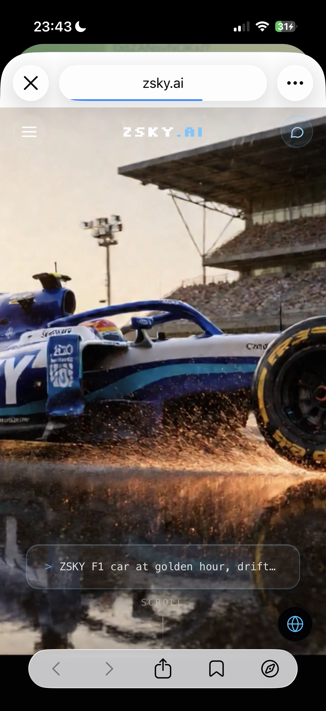
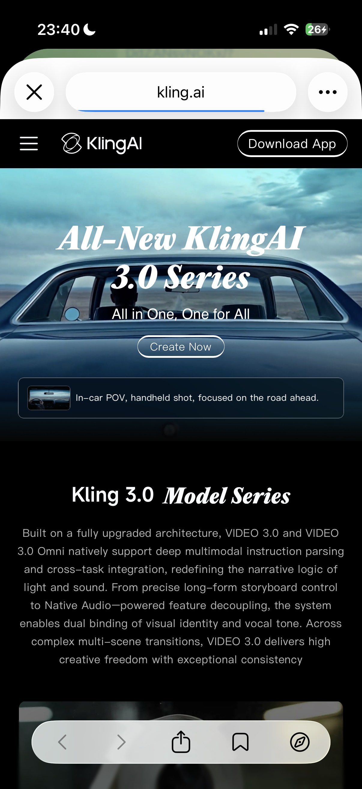
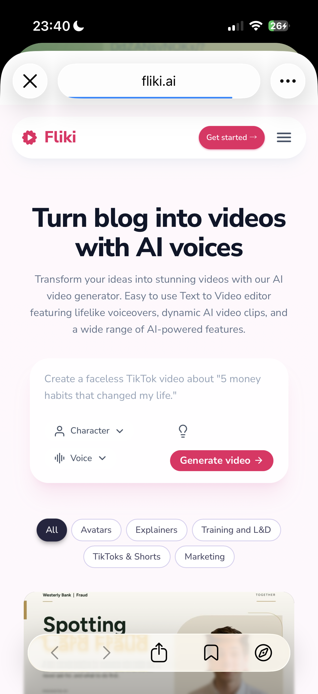
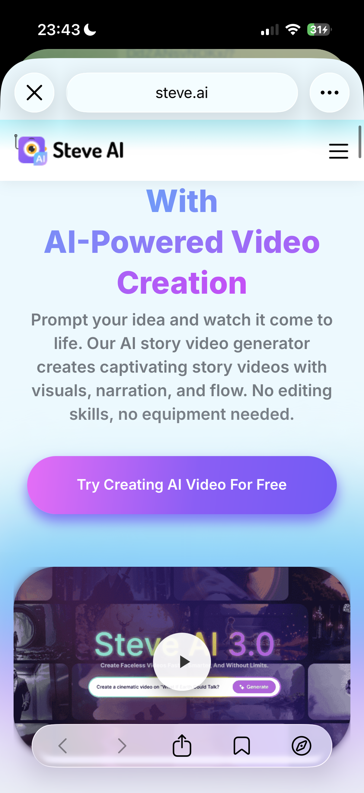
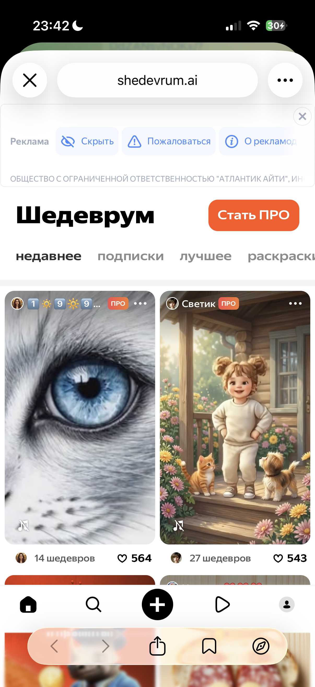
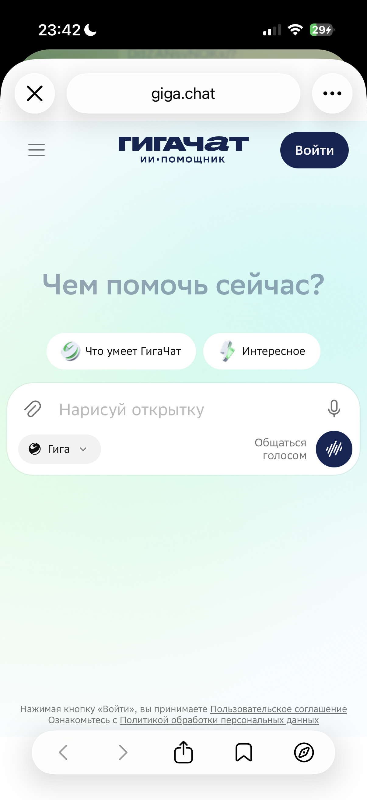
После первого экспорта
Частые вопросы
Сколько ZSKY AI хранит бесплатные работы?
Бесплатные работы хранятся в галерее 7 дней. Удачный MP4 лучше скачать сразу после генерации
Как D-ID считает длительность короткого ролика?
D-ID округляет длительность вверх отрезками по 15 секунд. Ролик на 16 секунд расходует лимит как 30 секунд
Можно ли использовать бесплатное видео ZSKY AI в коммерческом проекте?
Да. Официальная таблица разрешает коммерческое использование на Free, но на файле остаётся плашка ZSKY AI
Что останется в Pictory после окончания пробного доступа?
Аккаунт и проекты останутся доступны, но скачать видео после окончания пробы без платного плана нельзя
Первый MP4 уже можно собрать и проверить на коротком тесте. Следующий шаг шире одного ролика: связать нейросети в повторяемую цепочку и посмотреть, какие продукты, сайты и воронки можно запускать без кода
Что можно делать с нейросетями, если не знаешь кода?
Чтобы почувствовать размах, посмотри Концентрат Ивана Сергеева. ИИ-агенты на твоих глазах собирают продукт, контент, сайты и воронки без кода. Это основа под любую цель: свои услуги, партнёрка, чужой бизнес. Три дня бесплатно, VIP с четвёртым днём - 990 ₽
Забрать КонцентратУже знаешь, чего хочешь? Тогда в мастер-группу Ивана: система продаж на ИИ без продюсера и технаря, сопровождение и сообщество
Заполнить анкету предзаписиНабор открывается редко, кто записался заранее, получает лучшую цену и бонусы. Платить сейчас не нужно
Реклама. ИП Сергеев И. С., ИНН 352511695540. erid: 2Vtzqvk2p6q